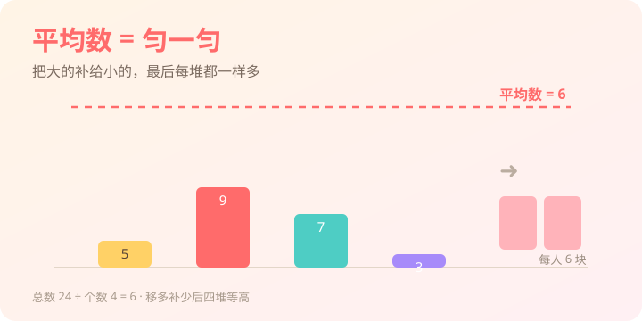

小明 3 局得 2 分、小红 5 局得 4 分，谁打球更厉害？光看总数不公平——今天学会用"平均数"把比赛拉到同一起跑线。
平均数，表示一组数据的总体水平，是"匀一匀"之后每组都一样的那个代表值；它帮我们把不好比的数据，放在同一把尺子上比较。

选一个你关心的问题，后面的内容会围绕它展开。
选择或输入后，本课会围绕你的问题展开。
1. 求 2、4、6、8 的平均数？
2. 下面哪句话更接近"平均数"的意思？
平均数不是最大的数，也不是最小的数，而是把一组数移多补少之后，每堆都一样的那个数——它代表这组数据的总体水平。数学上，把这样"匀一匀"得到的代表值称为平均数（定义为：总数 ÷ 份数）。
4 个小朋友各有 5、9、7、3 块糖。把多的补给少的，最后每人 6 块——这 6 就是平均数。
小明 3 局得 2 分、小红 5 局得 4 分，直接比总分不公平；看平均每局得分才公平：2÷3≈0.67，4÷5=0.8，小红更稳。
两种思路，结果一样：
平均数 = 总数 ÷ 份数
例：5、9、7、3 的平均数 = (5+9+7+3) ÷ 4 = 24 ÷ 4 = 6。
小方四次测验得分：88、92、76、84，求平均分。ex-1
甲乙丙丁各有几块糖（柱子高度）。点 − / + 改变数量，或点"自动匀一匀"，看怎么把它们变得一样高——那个相同的高度，就是平均数。
目标：让四根柱子一样高。虚线是平均数 6。
💡 纯本地交互，无需联网。
5 个同学的分数是 70、75、80、85、90（平均 80）。拖动"转校生"的分数，看平均数怎么被一个人改变——这就是数据意识。
6 个人的平均数 = 80.8
📊 生活里"平均工资""平均房价"常被一两个极高值拉高，所以看平均也要看分布（后面会学中位数）。
1. 求 10、20、30 的平均数？
2. 平均数一定落在哪里？
3. 一组数的平均数是 15，其中一个数是 40（很高），说明这组数可能？
1. 小明三次跳绳：120、135、145 下，平均每次约多少下？
2. 小组 4 人身高 130、132、134、136 cm，又来了一位 190 cm 的篮球队员，平均身高会？
3. 比较两个班的成绩，只看平均分够吗？
求平均，先合后分：总数除以个数；意义记心间——匀一匀的代表值。
卡住的地方，点卡片向 AI 学伴提问（如"为什么极端值会影响平均数？"）。
本节点的前置、后续和同域知识。